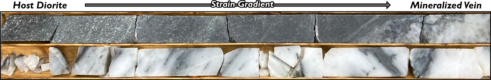

HOME |
|
RESEARCH |
|
TEACHING |
|
PUBLICATIONS |
|
GROUP |
Geology of Subduction Zone EarthquakesSubduction zone earthquakes are responsible for 90% of global seismic moment and 90-95% of the world's tsunamis. Through detailed geologic mapping and characterization of rocks from subduction zones, we aim to constrain the physical properties of the source region of subduction zone earthquakes and how rocks are physically changed during seismic events. |
Evolution of Fault Rock Properties with SlipComminution (grinding of rocks) and fluid-rock interactions cause the properties of fault rocks to evolve as faults slip. We work to quantify the evolution of fault rock properties with slip through microstructural analyses of natural and experimental fault rocks which have accommodated varying displacements. |
Deformation Mechanisms Across Pressure-Temperature SpaceHow minerals deform in nature is a complex function of intrinsic (e.g., mineral chemistry, grain size, grain shape) and extrinsic factors (e.g., temperature and pressure during deformation, imposed strain rate, and presence, composition, and activity of fluid phases). We aim to constrain how individual minerals deform across a large range of geologic conditions by carefully documenting deformation microstructures, constraining the conditions that produced them, and integrating them into global compilations of deformation microstructures. |
Structural Controls of Mineral DepositsThe discovery of new critical mineral resources is essential for a global transition to a low carbon and digitized economy. Faults and shear zones serve as permeable pathways through the crust and frequently serve as structural traps for mineralization. We work to carefully document the structures and conditions which promote: 1) ore deposition and 2) remobilization during subsequent deformation events. |
Strength of Faults and Shear ZonesShear deformation occurs along plate boundary faults and shear zones on Earth. Faults and shear zone strength plays a key role in plate tectonics and the earthquake cycle. Experiments on natural samples and paleopiezometry provide valuable constraints on the strengths and mechanical response of rocks to imposed strains. We perform experiments and use paleopiezometric methods on natural samples to constrain the strengths of faults and shear zones. |